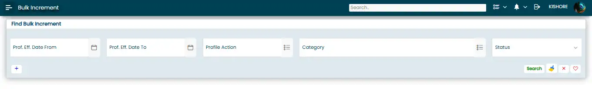
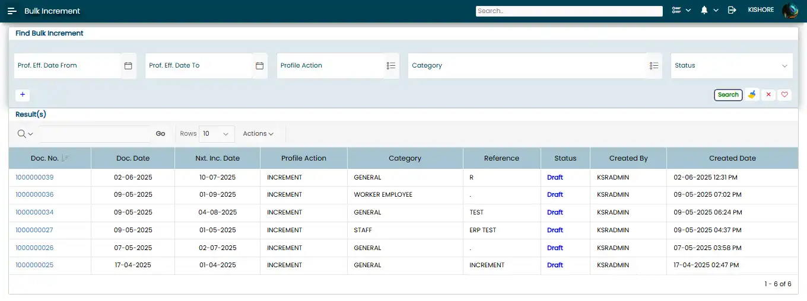
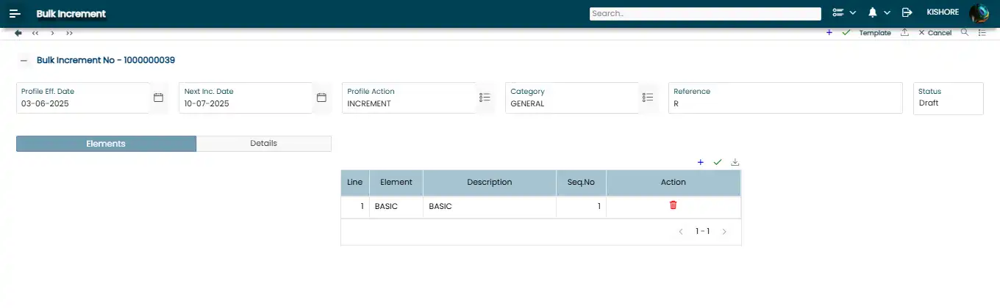

<div data-category="Payroll" data-title="Bulk Increment" data-updated="December 01, 2025" data-contributors="RoadmapIT" data-breadcrumb="Home,Payroll,Bulk Increment">
  <div class="page-content">
    <p>It is a dedicated section where you input details about an employee's salary increase (or "increment"), including the percentage or amount of the raise, the effective date, and other relevant information, allowing you to formally record and apply the salary change to their payroll record.</p>
    <h5>Navigation path:</h5>
    <p class="fs-6">Payroll \ Transaction \ Employee Master \ Bulk Increment</p>
    <!-- Bulk Increment Search -->
    <h2>Bulk Increment:</h2>
    
    <ul style="list-style-type: none; align-content: center">
      <li class="mouse-icon">Search screen displays the list of increments with relevant details.</li>
      <li class="mouse-icon">Click Search to filter all the records.</li>
      
      <li class="mouse-icon">User can filter documents by entering search parameters in the header.</li>
      <li class="mouse-icon">Using search, system displays results relevant to the entered parameters.</li>
      <li class="mouse-icon">On click, the corresponding transaction record will be displayed.</li>
      <li class="mouse-icon">
        Use
        
        to clear entered search parameters.
      </li>
      <li class="mouse-icon">
        Use
        <i class="bi bi-x fs-4 mx-2 text-danger"></i>
        to close the screen.
      </li>
      <li class="mouse-icon">
        By clicking the
        <i class="bi bi-plus fs-4 mx-2 text-primary"></i>
        Add button, user can create a new document.
      </li>
    </ul>
    <!-- Bulk Increment Entry -->
    <h2>Bulk Increment Entry:</h2>
    
    <ul style="list-style-type: none; align-content: center">
      <li class="mouse-icon">
        Click
        <i class="bi bi-plus fs-4 mx-2 text-primary"></i>
        to add elements.
      </li>
      <li class="mouse-icon">Enter the necessary elements.</li>
      <li class="mouse-icon">
        Click
        <i class="bi bi-check-lg fs-4 mx-1 text-success"></i>
        to save.
      </li>
      <li class="mouse-icon">
        Click
        <i class="bi bi-download fs-5 mx-1 text-muted"></i>
        to download the template and fill in the required details.
      </li>
      <li class="mouse-icon">
        Click
        <i class="bi bi-upload fs-5 mx-1 text-muted"></i>
        to upload the template.
      </li>
      <li class="mouse-icon">Enable the Check Exception checkbox.</li>
      <li class="mouse-icon">Click Post button to proceed.</li>
    </ul>
  </div>
</div>